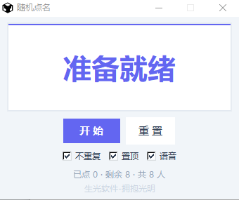

随机点名
v1.2告别“今天该轮到谁了”，一键抽人，公平又热闹。
核心功能
- 名单一次导入：把班级名单粘贴进去，下次打开自动记住。
- 滚动抽取动画：名字快速滚动后定格，全班注意力瞬间集中。
- 不重复模式：抽过的同学自动跳过，全班轮完一遍才重新开始。
- 置顶显示：窗口始终置顶，不被其他软件挡住。
- 语音播报：抽到名字时自动语音念出来（可开关）。
- 状态统计：实时显示“已点 X · 剩余 Y · 共 Z 人”。
- 一键重置：随时重新开始一轮，灵活控制课堂节奏。
随机点名 v1.2 · 真实界面
